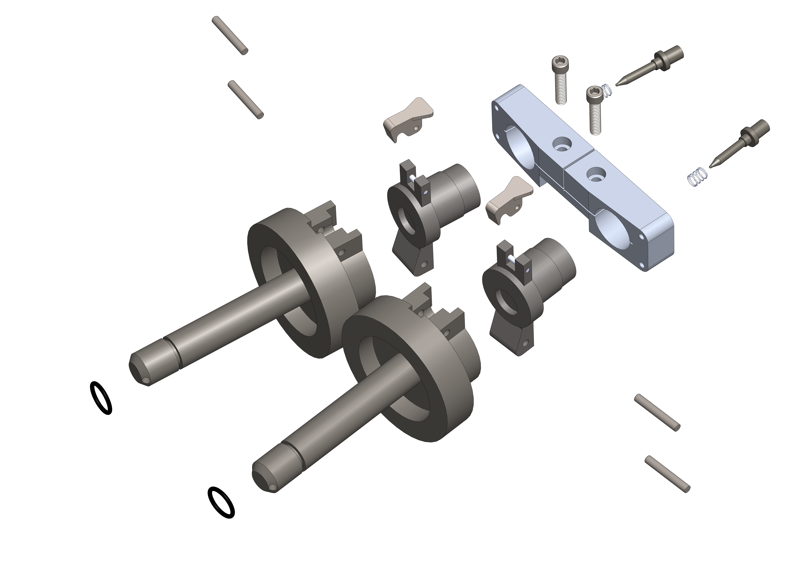
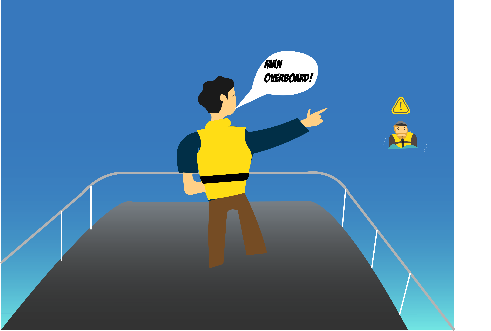

In 2018, my senior fall, I decided to take 2.009 (read as: two, double-oh-nine), an iconic MIT class. It is a mechanical engineering capstone class titled Product Design Processes. This rigorous class leads students through building a market-ready product up to a product launch at the end of the semester. In the beginning of the semester, the class gets split up into 8 teams. I was part of yellow team with 21 other people. Yes, that's a team of 22 people. Each week we would attend classes focused on guiding us through the product design process taught by the amazing David Wallace. But most importantly, we would have weekly lab sessions to work on our product. On average students spend 25-30 hours a week on their product. But it all culminates in an exciting product launch event at the end of the year. For my year, the product theme was Danger with a goal for products to mitigate danger.
Here, I'll talk about the making of and the process behind it all.
Ideation
The first phase of the class was focused on ideation. Our team was split into 2 competing sides making as many ideas as possible. We pinned them up, evaluated pros and cons, understood market sizes, and discussed technical feasibility. After coming up with over 400 idea sketches, we pared down ideas as we built prototypes. The first phase was called 3 ideas. Each half of our team presented three ideas and their market sizes. I was out of town for this week but one of my original ideas, hold-fast boots was chosen as one of our 6 ideas.
The second phase was the sketch model phase. Each half worked on simple hacked together prototypes. I had been focused on the hold-fast boots for which we built several prototypes. Commercial fishermen have one of the most dangerous jobs in the world mostly from falling into the sea due to rough waters. We wanted to mitigate this by anchoring the fishermen to the boat. We evaluated methods of adding traction to the boots by adding rubber suction cups, velcro, and an electro-magnet. We molded foam undersoles that would add suction, added an electromagnet to a boot, and added industrial velcro to another boot. After testing each of these, we found that prevention of falling is very difficult especially without harming the user. Additionally fishermen rarely adopt safety products, making it a very difficult market to enter into.
Mockups
The next phase was mockups. Each half of our team was focused on building 2 mockups which were higher fidelity prototypes. They were works-like prototypes with a goal to identify and eliminate the biggest risks with the idea. With the information that the hold-fast boot sub-team had, we had to pivot. The mockup phase was only one week and there was added pressure that of the 4 ideas that our team was working on, one would turn into our final idea. Everyone had to up their game and our sub-team pulled some long hours to get the job done. It was easily one of the most stressful weeks of the semester.
First we started with talking to fishermen and other boat owners. After lots of outreach, we confirmed that fishermen are typically averse to safety products and not the best market to enter. Sailboat owners on the other hand are usually the first to buy safety products and tend to be very cautious as well as financially able. With this in mind, and a goal on retrieval instead of prevention we started looking at how to retrieve someone who has fallen overboard. With several days already over, we needed to start prototyping fast, and have an idea on hand even faster. Getting together on a Saturday, I told the team that we needed an idea by the end of the day so we can start prototyping on Sunday for a Wednesday presentation to the whole class.
First we narrowed in on the problem that retrieving a M.o.B (Man Over Board) in a sailboat can take over 10 minutes with circling around the person with the boat. We split up and did an extensive search of existing products and protocols. After discussion, post its, drawings, and scratching our heads we settled on a pretty crazy idea. We wanted to build a device that would work like a long "lasso" to surround the victim and bring them close to the boat. This evolved into creating a triangle of rope around the user that we could reel in. We could do this if we shot out two projectiles that turn into the vertices of the triangle. As vague as it was, we finally had an idea. After pitching the idea of being able to create a 100 foot length triangle to some boat owners, they sounded interested albeit possibly skeptical. Now, there was 3 days to build a prototype that would vet the risks, make a presentation, and be ready to defend the idea to the team for our final product.
We made a list of propulsion methods, a trip to home depot, and started building a prototype. The first approach was elastic propulsion. Using bungee cords and elastic bands, we tried to launch a small projectile. The first results were disappointing with way too little launch distance. To reach 100 feet or more, (our intended spec) the elastic sling shot or spring would need to be unreasonably large. The next best propulsion method was compressed air. Based on t-shirt pneumatic cannon designs, we quickly made a design, and ordered the parts. 24 hours later we had a PVC air cannon built and ready for testing. With modest pressure levels, we were able to shoot a tennis ball with rope to about 150 feet. With a second cannon, we made the rope triangle as intended for a distance of about 60 feet.
In less than a week we had gone from no idea to having a working prototype that showcased our idea very clearly. It was far from a product, but this week ended up shaping up the entire rest of the semester for us.
With some great feedback from the mentors we got together as an entire team to vote on ideas. Manta, our marine safety product was voted as the best choice to continue pursuing for the rest of the semester. With our entire team of 22 on board to work on this, we had lots of work and lots of hands to do it. We quickly split up and started to work on designing different components. The rapid expansion from a team of 5 to 22 was a little difficult at start. Our small team had only spent a week on this, but collected lots of knowledge on the idea.
A week after our mockup presentation was Assembly Review, where we presented detailed CAD models of what we expect our product would be. This of course required us to have full designs of the entire product including propulsion technique, projectile, and the launcher body. With a fully mechanical product, we had lots of CADing to do. I focused on the storyboard for the product usage, to present the user experience. While burning the midnight oil I put to test all of my illustrator skills to design our storyboard, while a few of the other members ferociously "CAD'ed" away.
Our first full CAD assembly

My Wonderful Storyboard

Final Stretch
After assembly review, we had reached a pivotal point in the semester. It was the final stretch before the product launch. We were still behind the other teams, but it was time to work overtime and catch up. With just a few weeks remaining in the semester, we had to really start pushing harder and building out our prototypes. I took on the role as lead of the projectile sub team. We had a propulsion team and a housing team along with the projectile team.
Through the assembly review process, we had settled on some key specifications. Our device needed to launch two projectiles for at least 100 feet, each which would inflate into life preservers on contact with water. each projectile should have two ropes attached: one middle rope between the two of them, and one rope back to the launcher/boat. The rope needs to be thick enough to be grabbable. In order for the launcher to be small enough to be usable and feasible, the only reasonable propulsion mechanism was explosive (ie. like a cannon). With some reasonable calculations, a low weight projectile, and moderate weight rope, we theorized that .22 caliber blank charges have enough power to meet our specs. Lastly, the whole thing needs to be very reliable as a safety device, waterproof, extremely simple to use, and of course safe. We all laughed at each other with this laundry list of requirements. There was no way we could build this whole thing in 5 weeks right....
Meanwhile, one sub-team worked on designing the housing and launcher itself, while another worked on user testing, interfacing, and story boarding. The last sub-team was projectile, the task force that I was leading.
With the projectile, we had a few key missions. We needed to design a projectile that would be aerodynamic on launch, light enough to travel 100+ feet, and on impact with water, turn into a life preserver. Automatic life jackets use small CO2 compressed air canisters and water based triggers to inflate. We bought a few of them and started taking them apart. We designed an inflatable geometry and calculated volume needed to support a 200 pound person. Nylon based TPU is a strong waterproof material that we found to work well for making the life jacket. We cut and learned how to heat seal the TPU to make the life jackets and after hours of experimenting we perfected the method to make them airtight and waterproof.
We also traced the trigger and inflation mechanism back to its manufacturers in China. I was able to get a few dozen of them cheaply to use for our own custom life preservers.
Alongside this, we needed to design the housing for the projectile and all of its various components. We went through numerous iterations to test safety, robustness, and aerodynamics. You can see them below. Initially, the CO2 canisters would consistently get punctured on launch leading to premature inflation. This led to reduced distances. Some of our designs were too heavy to fly far enough to hit our 100 feet specification. Some were too weak and fell apart on the impact forces. It took weeks to finally reach the design that could withstand the launch force, carry the payload, and inflate into a life preserver. And this ended up being a result of finding the simplest design, devoid of anything unnecessary. We then optimized it to hit all of our constraints. It took up till just a few days before our presentation, that we had a working projectile, but working with so many constraints was not only challenging but also very rewarding in the end.
Testing
Of course throughout the entire process testing was a massive part of our work. each week, we had dedicated range testing hours on different open grass fields on campus. Initially this started with our homemade launcher and projectiles in a steel box for safety. After dozens of trials, we moved onto a handheld launcher.
Through the course of 6-8 weeks we performed hundreds of launch trials. One key reason was because my sub-team was constantly iterating on the projectile designs. We were coming up with up to 5 new designs to test per day at certain times. In addition to that, this amount of rigorous testing allowed us to prove the reliability of our device, failure rate, and effects of wear and tear. Of course in actual use, a user might fire the launcher once in several years, similar to the usage of an airbag.
We also did user testing with our product. First we had several volunteers jump into the pool, and be reeled in. We used this to test different rope sizes and rope configurations. We also did user testing after the launcher was fully assembled. We had 15 users fire the device to test their accuracy and comfort with the device. Of course all of our own team also tested launching the device. With potential danger with testing our device, we had to take precautions every time, making it harder to test. Testing inside was impossible, so we had to go out to the field whenever testing was needed, including in snow, rain and freezing temperatures in November.
Our last testing was in real life conditions on a sail boat in the Boston Harbor. With a life sized human dummy, we simulated and tested a Man Over Board scenario.
Montage of testing footage
Presenting
Having been a member of the evolution of the idea from day 1, I wanted to have the opportunity to present Manta For a while I juggled working on the projectile as well as preparing the presentation. But two weeks before the presentation, I had to go all in on the presentation. With only 10 minutes to present everything, the three presenters had to do justice to a semester's worth of work. We pulled everything together, trimmed and trimmed constantly, and practiced even more.
On presentation day, there was a live band, banners, lights, projectors, lots of backstage scrambling, and of course, David Wallace's jokes. The Manta presentation started with a beautiful video from our live testing in the harbor. Following that was a live demo of our launcher. It seemed like a crazy idea at first, but we thought it would be a powerful demo. The night before presentations, we had the stage to practice. Launching into a large net, our trials were not going well. The net couldn't be positioned well enough to catch the projectiles without hitting the audience. Eventually we found an angle where Lauren, our sailor on stage could reliably shoot into the net.
As I counted down for the launch demo, our whole team held their breaths to watch the launch in action. We'd seen the launch hundreds of time in trials, but this was the most important test and it worked as expected. The second demo was an inflation demo of our projectile/life preserver in a tank of water. When the projectile transforms from a conical small cylindrical projectile to a large yellow U-shaped life preserver, I took a sigh of relief as the audience roared.
While stressful, presenting manta on stage to over 1200 people live and 40,000 virtual was amazing. 2.009 was a wild roller coaster of a class. Being on a purely mechanical product taught me a lot about mechanical design. But more than technical knowledge, I learned a lot about team management, product vision, and managing a project. Without those things, we would have never been able to get our product built in time. As the confetti fell and we sipped hot chocolate while talking to guests about Manta, we all felt relief, happiness, but also nostalgia. Our lab days, late hours of tinkering, and stressing out about launch distances were over. But we had a working product in our hands, something that was a sketch 2 and a half months earlier.
Ideate. Model. Test
The class also has several interesting events throughout the course of the semester to teach us the core principles of product design. Each year, course staff follow around one team to document their process. Here's that video as well as several others that recap what the class is all about.